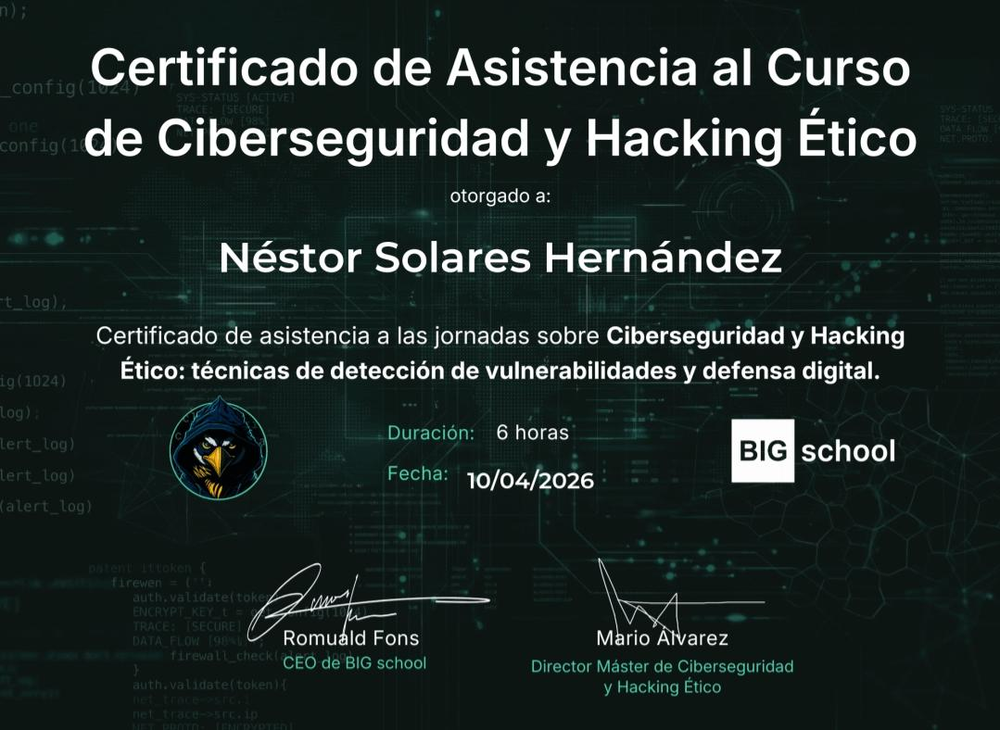
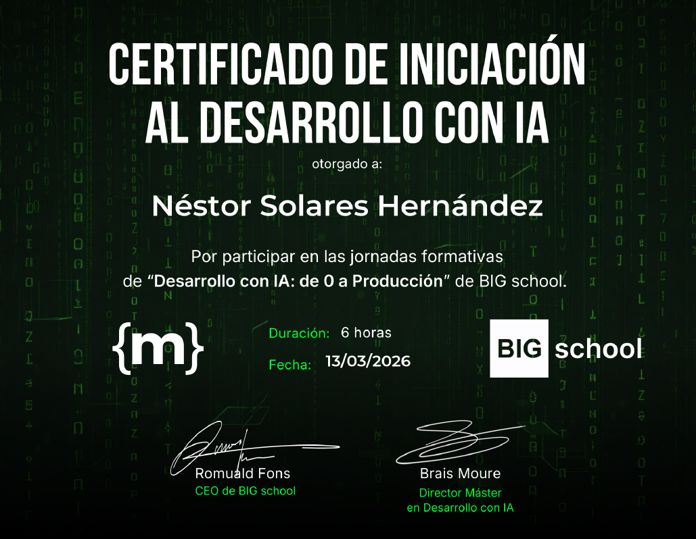
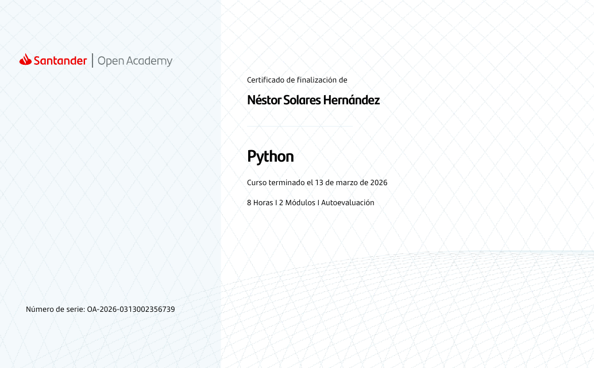

SMR // IES EL RINCÓN // NODE_ID: 2026_NÉSTOR
$ cat biography.txt
Estudio la infraestructura y desarrollo de los sistemas. Me enfoco en optimizar procesos, automatizar tareas y construir puentes eficientes entre el software y los sistemas, logrando que la tecnología funcione de manera más fluida y confiable.
> ENFOQUE: Automatización y Ciberseguridad.
▮ STATUS: ONLINE | LOC: GRAN CANARIA
$ cat capabilities.json | jq
$ ls -la ~/projects
Script que enumera binarios SUID y busca su explotación en GTFOBins.
Script que modifica los primeros bytes de un archivo para que el sistema lo detecte como otro tipo de archivo.
$ ls -la ~/certifications/

> Asistencia al Curso de Ciberseguridad y Hacking Ético
BIG School · 2026

> Iniciación al Desarrollo con IA
BIG School · 2026

> Python
Santander · 2026
$ ./connect --target=human
néstor-solares-hernández
GITHUB
github.com/nestoree
CORREO
nestorsolaresherdz@gmail.com